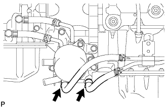

AUTOMATIC TRANSMISSION ASSEMBLY > REMOVAL |
| 1. DISCONNECT CABLE FROM NEGATIVE BATTERY TERMINAL |
| Condition | Waiting Time |
| Vehicle enrolled in G-BOOK system | 6 minutes |
| Vehicle not enrolled in G-BOOK system | 1 minute |
| 2. REMOVE NO. 1 ENGINE UNDER COVER SUB-ASSEMBLY |
Remove the 4 bolts.
 |
Unhook the No. 1 engine under cover from the vehicle body as shown in the illustration.
| 3. REMOVE REAR ENGINE UNDER COVER ASSEMBLY |
Remove the 4 bolts and rear engine under cover.
| 4. REMOVE PROPELLER SHAFT HEAT INSULATOR |
Remove the 2 bolts and propeller shaft heat insulator.
| 5. DRAIN AUTOMATIC TRANSMISSION FLUID |
Remove the drain plug and gasket, and drain the ATF.
Install a new gasket and the drain plug.
| 6. DRAIN ENGINE COOLANT |
Loosen the radiator drain cock plug.
Remove the radiator cap. Then drain the coolant from the radiator.
Loosen the 2 cylinder block drain cock plugs. Then drain the coolant from the engine.
Tighten the 2 cylinder block drain cock plugs.

| *1 | Radiator Reservoir | *2 | Radiator Cap |
| *3 | Cylinder Block Drain Cock Plug | *4 | Radiator Drain Cock Plug |
Tighten the radiator drain cock plug by hand.
| 7. REMOVE FRONT PROPELLER SHAFT ASSEMBLY |
Remove the front propeller shaft (Click here).
| 8. REMOVE PROPELLER SHAFT ASSEMBLY |
Remove the propeller shaft (Click here).
| 9. REMOVE FRONT EXHAUST PIPE ASSEMBLY |
Remove the front exhaust pipe (Click here).
| 10. DISCONNECT TRANSMISSION CONTROL CABLE ASSEMBLY |
 |
Remove the nut and clip and disconnect the transmission control cable from the transmission.
| 11. REMOVE STARTER ASSEMBLY |
Remove the starter (Click here).
| 12. REMOVE DRIVE PLATE AND TORQUE CONVERTER CLUTCH SETTING BOLT |
 |
Remove the flywheel housing side cover.
Turn the crankshaft to gain access to the 6 bolts and remove each bolt while holding the crankshaft pulley bolt with a wrench.
| 13. SUPPORT AUTOMATIC TRANSMISSION ASSEMBLY |
 |
Support the transmission with a transmission jack. Lift the transmission slightly from the crossmember.
| 14. REMOVE FRONT SUSPENSION MEMBER BRACKET LH AND RH |
 |
Remove the 8 bolts and front suspension member bracket LH and RH.
| 15. REMOVE NO. 3 FRAME CROSSMEMBER SUB-ASSEMBLY |
Remove the 4 bolts of the rear engine mounting insulator.
Remove the 4 nuts, 4 bolts and frame crossmember.
| 16. REMOVE REAR NO. 1 ENGINE MOUNTING INSULATOR |
Remove the bolt and rear engine mounting heat insulator.
Remove the 4 bolts and rear engine mounting insulator from the transmission.
| 17. DISCONNECT WIRE HARNESS AND CONNECTOR |
Remove the nut and disconnect the ground cable.
Tilt the transmission downward.
Remove the 2 nuts and No. 2 wire harness heat insulator.
| *1 | No. 2 Wire Harness Heat Insulator | - | - |
Remove the nut and disconnect the crankshaft position sensor connector and sensor harness.
Disconnect the park/neutral position switch connector, transmission wire connector, 2 speed sensor connectors and transfer control connector.
Detach the 2 connector clamps and 8 harness clamps and disconnect the wire harness.
| 18. DISCONNECT NO. 1 WATER BY-PASS PIPE |
Disconnect the 2 water by-pass hoses from the transmission oil cooler.
Remove the 2 bolts and disconnect the water by-pass pipe.
| 19. REMOVE TRANSMISSION OIL COOLER ASSEMBLY |
|  |
Disconnect the No. 2 oil cooler inlet hose and No. 2 oil cooler outlet hose from the transmission oil thermostat.
Disconnect the No. 1 oil cooler inlet hose and No. 1 oil cooler outlet hose from each oil cooler tube union.
Remove the 3 bolts and transmission oil cooler with transmission oil thermostat.
| 20. REMOVE AUTOMATIC TRANSMISSION ASSEMBLY |
Remove the 10 bolts and transmission.
| 21. REMOVE HARNESS CLAMP BRACKET |
Remove the 7 bolts and 7 brackets.
| 22. REMOVE NO. 1 TRANSMISSION CONTROL CABLE BRACKET |
Remove the 2 bolts and bracket.
| 23. REMOVE TRANSFER ASSEMBLY |
Remove the transfer (Click here).
| 24. REMOVE TORQUE CONVERTER CLUTCH ASSEMBLY |
| 25. INSPECT TORQUE CONVERTER CLUTCH ASSEMBLY |
Inspect the torque converter clutch (Click here).